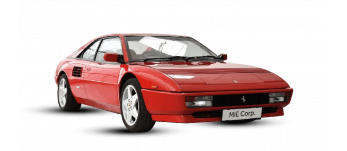

A Ferrari 125 S foi o primeiro carro construído pela Ferrari para disputar ,
as corridas daquela época corria com um motor V12 de 116 hp que chegava a
155 Km/h depois veio o sucessor 159 S e em 1952 surgiu o primeiro carro de rua da marca.
R$ 8,4 milhões
O Ferrari Mondial T 300 cv é suposto ter uma velocidade máxima de 255 km/h